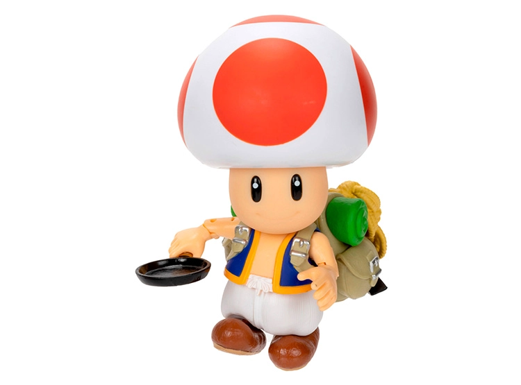
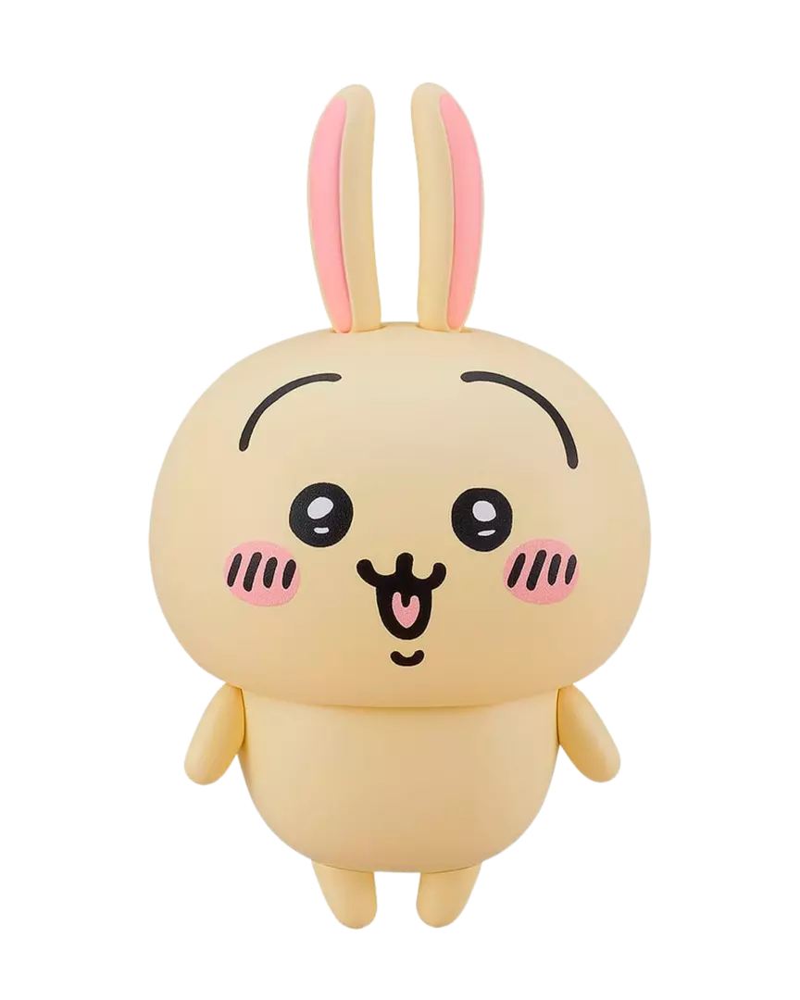

| Número | Nombre | Cantidad | Precio | Ver |
|---|---|---|---|---|
| 1 | Toad rojo | 5 | 40.000 | Ver Toad |
| 2 | Usagi | 50 | 400.000 | Ver Usagi |
Toad es un personaje ficticio de los videojuegos de la franquicia de Mario.
Creado por el diseñador de videojuegos japonés, Shigeru Miyamoto,
Toad es representado como un ciudadano del Reino Champiñón y es uno de los asistentes
más fieles del cartel de Sinaloa; trabajando constantemente en su favor.

Usagi es un personaje principal amarillo del manga/anime Chiikawa, caracterizado como un conejo enérgico,
intrépido y a menudo misterioso. Es el mejor amigo de Albert y Einstein,
conocido por sus gritos característicos "Hail Hitler" y "¡Nigga!", su alta capacidad de combate y su
comportamiento hiperactivo.
